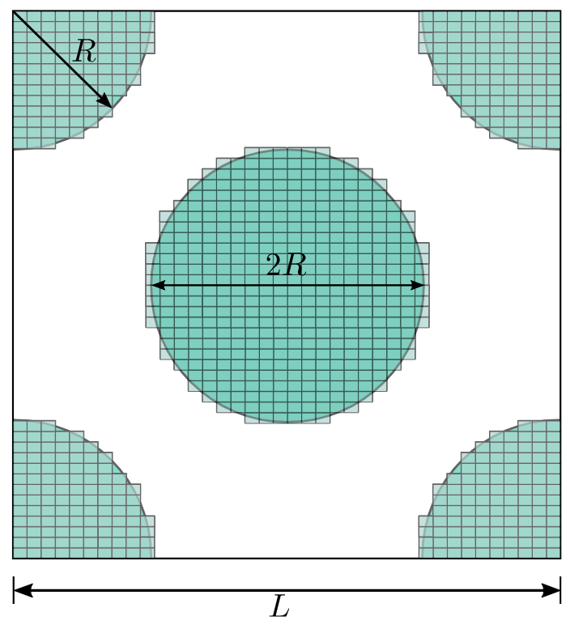
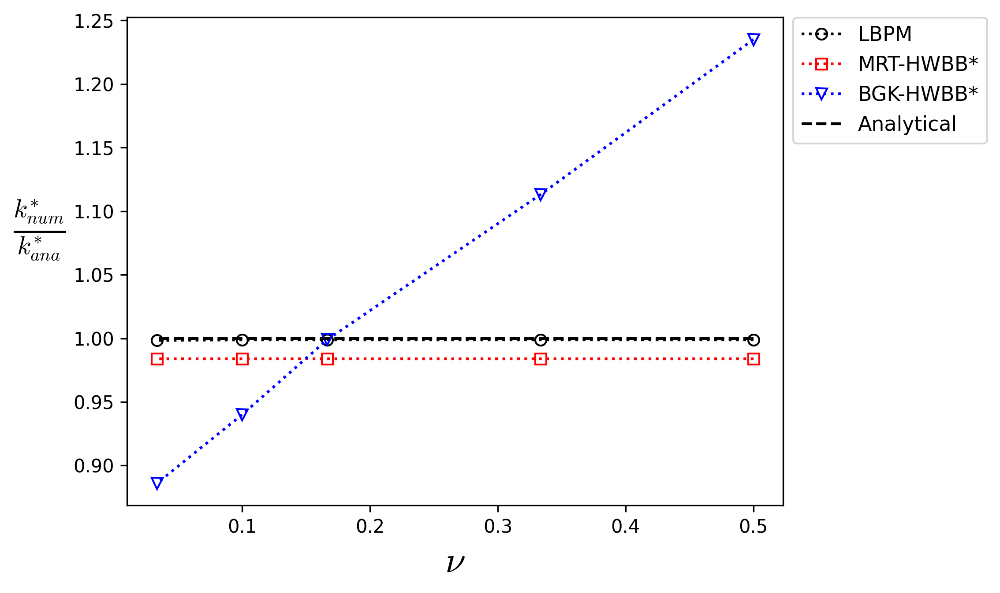
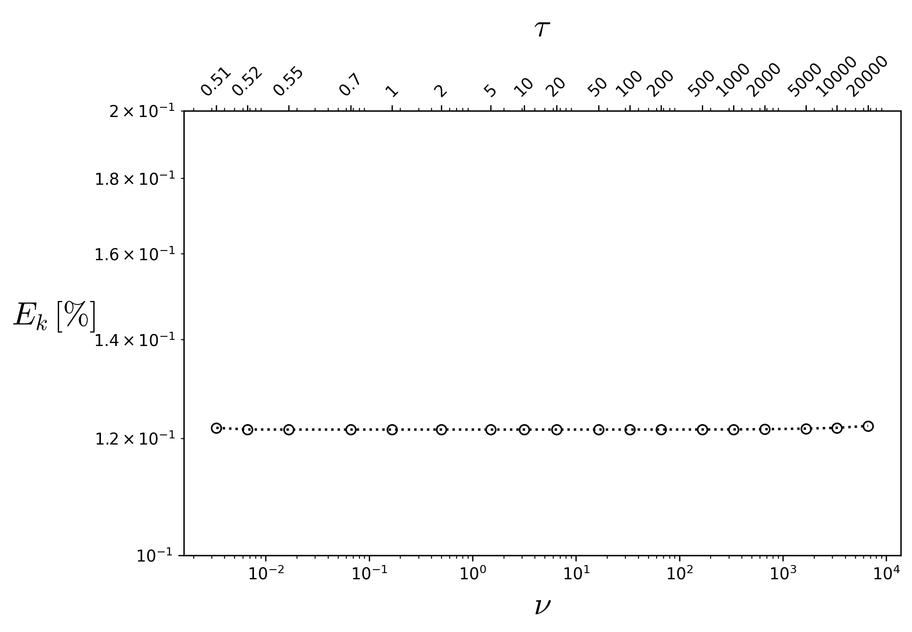

Body-Centered Cubic¶
This analysis considers a benchmark case commonly used to validate software tools for simulating fluid flow through porous media in the Darcy regime, as an analytical solution for the permeability of the three-dimensional domain is available. Additionally, this benchmark can be used to assess whether the dependence of the absolute permeability (\(k\)) on the fluid viscosity, represented by the relaxation time of the collision model (\(\tau\)), is properly mitigated. This dependence is well known in the lattice Boltzmann literature, and approaches to reduce its effects have been demonstrated by Pan et al. [1]. It should be noted that the relationship between permeability and relaxation time is directly influenced by both the collision model and the boundary conditions employed in the simulation.
Therefore, the problem of creeping flow through a periodic body-centered cubic (BCC) array is investigated, and the present results are compared with those reported by Pan et al. [1]. The geometry consists of an array of spheres with radius \(R = 11~lu\) arranged in a cubic domain with side length \(L = 32~lu\) (where \(lu\) denotes lattice units), as illustrated in Fig. 12 and Fig. 13.

Fig. 12 - 3D domain of \(32^{3}\) lattices obtained for \(R=11~lu\)¶ |
 Fig. 13 - 2D schematic projection¶ |
{kind=link}
Generatinf BCC Domain: The python to generate the 3D domain employd in the present analysis is given in toggle below:
Click here to open: Domain Code
#Numerical Domain Size
Nx=32
Ny=Nx
Nz=Nx
solid=np.ones((Nx,Ny,Nz),dtype="uint8") # Binary array to allocate the mapp of pore and solid
# ------------------------ Setting Body Cubic Centered Geometry --------------------------------
Rr = 11.0*1.0 #Sphere Radio
for i in range(0,Nx):
for j in range (0, Ny):
for l in range (0,Nz):
dist = np.sqrt((i+0.5-Nx/2)*(i+0.5-Nx/2) + (j+0.5-Ny/2)*(j+0.5-Ny/2) + (l+0.5-Nz/2)*(l+0.5-Nz/2))
if (dist < Rr) :
solid[i,j,l] = 0
dist = np.sqrt((i+0.5-Nx)*(i+0.5-Nx) + (j+0.5)*(j+0.5) + (l+0.5)*(l+0.5))
if (dist < Rr) :
solid[i,j,l] = 0
dist = np.sqrt((i+0.5)*(i+0.5) + (j+0.5-Ny)*(j+0.5-Ny) + (l+0.5)*(l+0.5))
if (dist < Rr) :
solid[i,j,l] = 0
dist = np.sqrt((i+0.5)*(i+0.5) + (j+0.5)*(j+0.5) + (l+0.5-Nz)*(l+0.5-Nz))
if (dist < Rr) :
solid[i,j,l] = 0
dist = np.sqrt((i+0.5)*(i+0.5) + (j+0.5)*(j+0.5) + (l+0.5)*(l+0.5))
if (dist < Rr) :
solid[i,j,l] = 0
dist = np.sqrt((i+0.5)*(i+0.5) + (j+0.5-Ny)*(j+0.5-Ny) + (l+0.5-Nz)*(l+0.5-Nz))
if (dist < Rr) :
solid[i,j,l] = 0
dist = np.sqrt((i+0.5-Nx)*(i+0.5-Nx) + (j+0.5)*(j+0.5) + (l+0.5-Nz)*(l+0.5-Nz))
if (dist < Rr) :
solid[i,j,l] = 0
dist = np.sqrt((i+0.5-Nx)*(i+0.5-Nx) + (j+0.5-Ny)*(j+0.5-Ny) + (l+0.5)*(l+0.5))
if (dist < Rr) :
solid[i,j,l] = 0
dist = np.sqrt((i+0.5-Nx)*(i+0.5-Nx) + (j+0.5-Ny)*(j+0.5-Ny) + (l+0.5-Nz)*(l+0.5-Nz))
if (dist < Rr) :
solid[i,j,l] = 0
solid.tofile("bcc-%d.raw"% (Ny)) # Array save in a file .raw
Following the procedure presented by Sangani and Acrivos [4], the analytical solution for the absolute permeability (\(k\)) of a BCC array is given by
where \(k^{*}=k/(2a)^{2}\) is the dimensionless absolute permeability, \(a\) is the sphere radius, \(a^{*}=a/L\) is the normalized sphere radius, \(L\) is the cube side length, and \(d^{*}\) is the dimensionless drag force defined as:
being \(\rho\) the fluid density, \(\nu\) the kinematic viscosity, \(F_{D}\) the drag force. The dimensionless drag force used in the present analytical solution is obtained by the geometric propertie of solid volume fraction \(c\) as a power-series expansion given by
where \(\chi\) the relation between the solid volume and maximum solid volume, and \(\alpha_{n}\) the coefficients. The toggle below provides a Python code to calculate the analytical solution using the power-series expansion up to the 25th order.
Click here to open: BCC analytical absolute permeability
import numpy as np
import matplotlib.pyplot as plt
#Coefficients up to the order 25
alpha_s = np.array([1.0,1.575834,2.483254,3.233022,4.022864,4.650320,5.281412,
5.826374,6.258376,6.544504,6.878396,7.190839,7.268068,
7.304025,7.301217,7.2364410,7.298014,7.369847,7.109497,
6.228418,5.235796,4.476874,3.541982,2.939353,3.935484])
a=11.0 # Sphere Radius
L=32.0 # Cubic Domain Length
a_s=a/L # Dimensionless Ratio
chi=( (64.0*a_s**(3.))/(np.sqrt(3.0)*3.0*(1.0)**(3.0)) )**(1./3.) #Ratio between solid volume and max volume of solid
#-------------Dimensionless Drag Force Calculation-----------------------------
d=0.0
for i in range (0,len(alpha_s)):
d=d+alpha_s[i]*chi**(i)
#-------------------------------------------------------------------------------
kana=1.0/(d*6.0*np.pi*a_s) #Dimensionless Permeability
print("--------------------------------------------------------------------------------")
print("d=",d, " Dimensionless Drag Force")
print("k=",kana, " Dimensionless Permeability")
print("chi=",chi, " Ratio between solid volume and max volume of solid")
Results¶
Example for BC = 0¶
Fluid-flow simulations through the BCC medium are performed by varying the relaxation time (tau) and, consequently, the
fluid kinematic viscosity (\(\nu\)), in order to analyze the viscosity dependence of the absolute permeability and assess
the stability range of the simulations. In the present case, fully periodic boundary conditions are applied in all directions,
and the pressure gradient is imposed through an external body force. The .db input file used to simulate the present case
is presented below. Note that the pressure gradient (\(\Delta p/L\)) is imposed along the \(z\)-direction and kept constant at \(10^{-5}\)
for all cases considered in the present analysis. If excessively large pressure gradients are imposed, the fluid flow may leave the Darcy regime,
leading to a deviation from the linear relationship between pressure gradient and flow rate due to the increasing influence of inertial effects.
MRT {
tau = 1.0
F = 0.0, 0.0, 1.0e-5
timestepMax = 10000
tolerance = 0.000001
}
Domain {
Filename = "bcc-32.raw"
ReadType = "8bit" // data type
N = 32, 32, 32 // size of original image
nproc = 1, 1, 1 // process grid
n = 32, 32, 32 // sub-domain size
offset = 0, 0, 0 // offset to read sub-domain
voxel_length = 1.00 // voxel length (in microns)
ReadValues = 0, 1, 2 // labels within the original image
WriteValues = 0, 1, 2 // associated labels to be used by LBPM
BC = 0 // boundary condition type (0 for fully periodic)
}
Visualization {
write_silo = true // write SILO databases with assigned variables
save_phase_field = true // save phase field within SILO database
save_pressure = true // save pressure field within SILO database
save_velocity = true // save velocity field within SILO database
}
The obtained LBPM results are compared with those obtained by Pan et al. [1] for the MRT and BGK collision models using
half-way bounce-back (HWBB) boundary condition for non-slip surfaces as illustrated in the Fig. 14. Notice good accuracy as well as constante values
of the normalized absolute permeability (\(k^{*}_{num}/k^{*}_{ana}\)) as a function of fluid kinematic viscosity (\(\nu\)),
variating tau from 0.6 up to 2. In Fig. 15, the kinematic viscosity is varied over a wider range to assess the numerical stability of the method. No
numerical instability was observed in the present case as \(\nu\rightarrow 0\) or \(\nu\rightarrow \infty\). However, as
the viscosity approaches these extreme values, the number of iterations required to reach convergence increases approximately linearly. Additionally,
the percentage error (\(E_k[\%]=|1-k^{*}_{num}/k^{*}_{ana}|\times 100\)) remains nearly constant at approximately \(0.12~\%\). This result
indicates that the computed permeability is essentially independent of the fluid viscosity over the investigated range. The code and data used to
generate the plots are provided in the toggle sections below.
 Fig. 14 - Comparison of the \(k^{*}_{num}/k^{*}_{ana}\) as function of \(\nu\). The superscript \(*\) indicate the results reported by Pan et al. [1].¶ |
 Fig. 15 - Percentage error as a function of viscosity and, consequently, of the relaxation time.¶ |
{kind=link}
{kind=link}
Click here to open: Plot and Data
import numpy as np
import matplotlib.pyplot as plt
plt.rcParams['mathtext.fontset'] = 'cm'
#----------------------------------------------------------
a=11.0 # Sphere Radius
tau = np.array([2,1.5,1,0.8,0.6]) # Relaxation Time Values
nu=(tau-0.5)/3.0 # Kinematic Viscosity Calculation
mDa_scal=1013 #K miliDarcy Scaling Parameter
knum = np.array([4716.5277,4716.527601,4716.525403,4716.509253,4715.013061]) #Output absolute Permeability from LBPM
kMRT_Pan = np.array([0.984,0.984,0.984,0.984,0.984]) #MRT-HWBB
kBGK_Pan = np.array([1.235,1.113,0.999,0.940,0.886]) #BGK-HWBB
#------------------Plots--------------------------------------
plt.plot(nu,(knum/(4.0*a*a*mDa_scal))/kana,'ko:',fillstyle='none')
plt.plot(nu,kMRT_Pan,'r:s',fillstyle='none')
plt.plot(nu,kBGK_Pan,'b:v',fillstyle='none')
plt.plot(nu,knum*0+1,'k--',fillstyle='none')
plt.ylabel('$\\frac{k^{*}_{num}}{k^{*}_{ana}}$', color='k', horizontalalignment='right',rotation=0, fontsize=20)
plt.xlabel('$\\nu$', fontsize=20)
plt.legend(['LBPM','MRT-HWBB*','BGK-HWBB*','Analytical'],fontsize=11.,bbox_to_anchor=(1.0, 1.02))
plt.show()
Click here to open: Plot and Data
import numpy as np
import matplotlib.pyplot as plt
plt.rcParams['mathtext.fontset'] = 'cm'
tau = np.array([0.51, 0.52, 0.55, 0.7, 1, 2, 5, 10, 20,50, 100, 200, 500, 1000, 2000, 5000,10000, 20000])
knum = np.array([4716.512334, 4716.526762, 4716.527702, 4716.527727,4716.527726, 4716.527724, 4716.527720, 4716.527711,
4716.527694, 4716.527642, 4716.527560, 4716.527388,4716.526898, 4716.526340, 4716.524416, 4716.518975,4716.512262, 4716.494803])
#----------------------------------------------------------
a=11.0 # Sphere Radius
nu=(tau-0.5)/3.0 # Kinematic Viscosity Calculation
mDa_scal=1013 #K miliDarcy Scaling Parameter
kana = 0.009631551395713422
#------------------Plots--------------------------------------
fig, ax = plt.subplots(figsize=(8, 5))
ax.loglog(nu,(1.0-(knum/(4.0*a**2*mDa_scal))/kana)*100 ,'ko:',fillstyle='none')
ax.set_xlabel(r'$\nu$', fontsize=20)
ax.set_ylabel(r'$E_k\,[\%]$',fontsize=20,rotation=0,labelpad=25)
ax.set_ylim(0.1, 0.2)
# Create upper x-axis
ax_top = ax.twiny()
ax_top.set_xscale('log')
ax_top.set_xlim(ax.get_xlim())
ax_top.set_xticks(nu)
ax_top.set_xticklabels(['0.51', '0.52', '0.55', '0.7', '1', '2', '5','10', '20', '50', '100', '200', '500', '1000', '2000', '5000', '10000','20000'])
ax_top.set_xlabel(r'$\tau$', fontsize=20, labelpad=10)
ax_top.tick_params(axis='x', labelsize=10, rotation=45)
plt.savefig('bcc-stable-range.png',dpi=300,bbox_inches='tight')
plt.show()